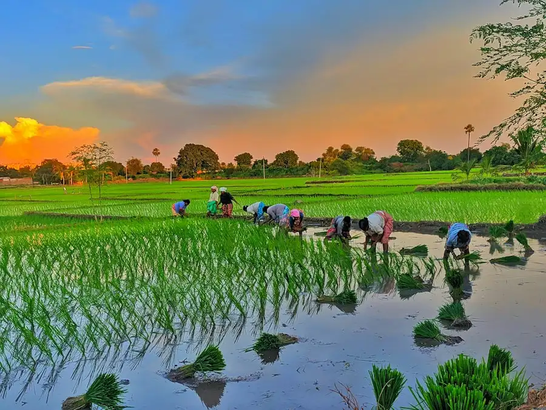

Scalable Plans For Growers & Produce Buyers
Whether you manage 10 acres of organic farmland or procure thousands of tons of fresh harvest for national retail, we provide clear, value-focused engagement models.
Select The Model That Fits Your Operational Scale
No hidden brokerage commissions. Fixed rates with clear deliverables.
Grower Starter
For independent progressive farmers transitioning to organic & smart monitoring.
- ✔ 2x LoRaWAN Soil Moisture & NPK Probes
- ✔ Complete Microbial Compost Prescription
- ✔ Monthly Drone NDVI Canopy Health Map
- ✔ Full Farm Manager Dashboard Access
- ✔ WhatsApp Agronomy Hotline Support
Agri-Enterprise Pro
For large-scale agricultural estates and farmer producer companies (50+ acres).
- ✔ Full Mesh IoT Wireless Weather Station
- ✔ Solar Valve Irrigation Micro-Automation
- ✔ Weekly High-Res Multispectral Drone Runs
- ✔ Guaranteed Buy-Back of Organic Yield
- ✔ NPOP/USDA Organic Certification Audits
- ✔ Dedicated Senior Agronomist Visits
Wholesale Buyer Pass
For supermarkets, hotel chains, and exporters requiring weekly certified harvest lots.
- ✔ Priority Harvest Lot Forward Allocation
- ✔ Direct Wholesale Price Without Broker Fee
- ✔ Real-Time Cold-Chain Reefer GPS Tracking
- ✔ Instant Lab GC-MS Chemical Test Sheets
- ✔ Custom Co-Branded Returnable Crates
- ✔ Flexible 30-Day Escrow Payment Terms
Comprehensive Capability Breakdown
Everything included across each agricultural engagement tier.
| Capability / Feature | Grower Starter | Agri-Enterprise Pro | Wholesale Buyer Pass |
|---|---|---|---|
| Cloud Dashboard Access | Farm Manager Portal | Farm Manager Full Suite | Produce Buyer Portal |
| Soil Sensor Telemetry | 2 LoRaWAN Probes | Full Multi-Depth Mesh | Lot Sensor Traceability |
| Drone Scouting Frequency | Monthly | Weekly (Multispectral) | Harvest Pre-Scouting |
| Direct Harvest Buy-Back | Optional Allocation | 100% Guaranteed Rate | Direct Lot Contracting |
| Cold Chain Fleet GPS | Standard Dispatch | Dedicated Route Priority | Live Temperature Ping |
| Chemical Residue Test Certs | Batch Level | Pallet Level GC-MS | Pre-Dispatch Lab Vault |
Proven Economic & Agronomic Returns In Season 1
Investing in precision organic stewardship pays for itself through reduced input expenditures, higher grade market premiums, and lower water pump power bills.
+27%
Net Farmer Profit Margin-48%
Irrigation Electricity Costs0%
Middleman Broker Cuts100%
Pesticide-Free Compliance
Frequently Asked Questions About Our Farming Plans
How does Stackly install IoT soil sensors on my land?
Our Salem technical team visits your field within 5 working days, maps cellular & LoRa signal strength, and installs solar-powered sensor nodes at root depth without disrupting ongoing plowing.
What happens if crop yields are affected by drought or unseasonal rain?
Our enterprise plans include parametric weather index insurance backing through accredited agricultural financial partners, shielding growers from severe climate shocks.
Can institutional produce buyers inspect farm plots prior to contracting?
Yes! We organize guided field inspections at our Salem cluster, including soil lab visits and greenhouse tasting sessions for procurement directors.
How do I switch or cancel our plan?
All plans operate on season-by-season agreements. You can upgrade, pause, or adjust contracted acreage ahead of any seasonal planting window without penalty.